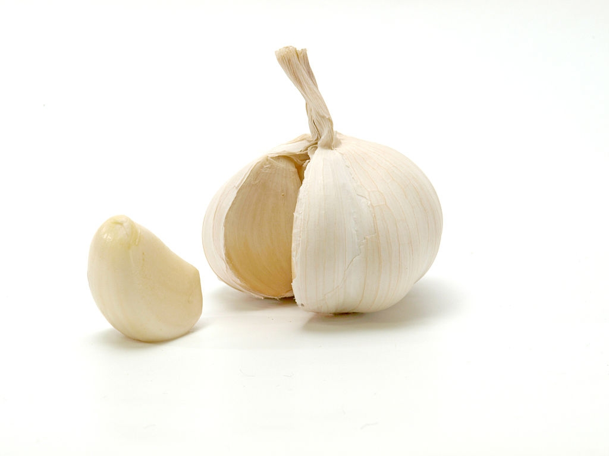
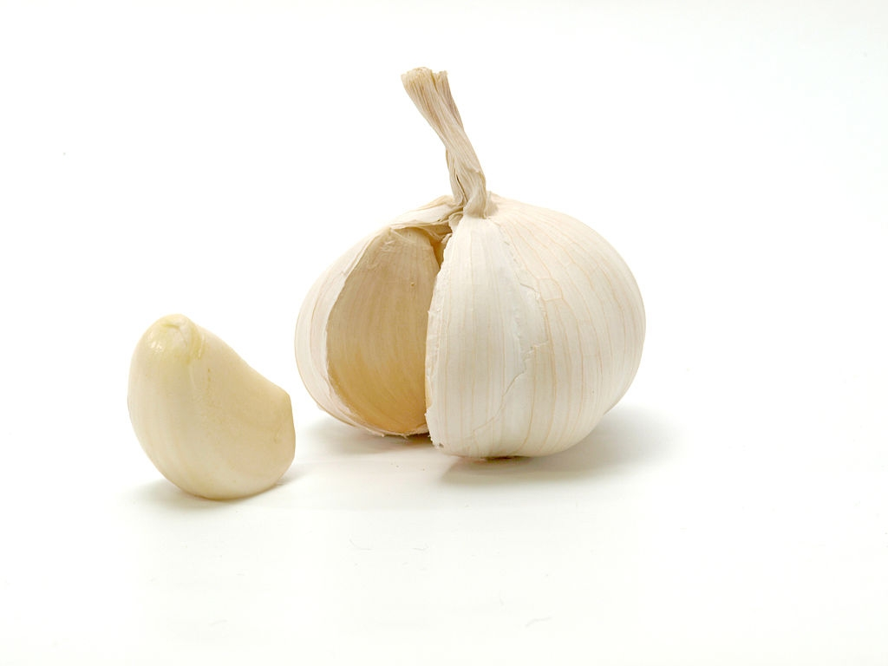

Ingredients
- 1 can (400g) of chick peas (garbanzo beans)
- 175g of tahini
- 6 sundried tomatoes
- Half a red pepper
- A pinch of cayenne pepper
- 1 clove of garlic
- A dash of olive oil

 


Instructions
- Remove the skin from the garlic, and chop coarsely
- Remove all the seeds and stalk from the pepper, and chop coarsely
- Add all the ingredients into a food processor
- Process all the ingredients into a paste
- If you want a coarse "chunky" hummus, process it for a short time
- If you want a smooth hummus, process it for a longer time
For a different flavour, you could try blending in a small measure of lemon and coriander, chili pepper, lime and chipotle, harissa and mint, or spinach and feta cheese. Experiment and see what works for you.

Storage
Refrigerate the finished hummus in a sealed container. You should be able to use it for about a week after you've made it. If it starts to become fizzy, you should definitely discard it.
Hummus is suitable for freezing; you should thaw it and use it within a couple of months.
Like this recipe? Try another recipe by Barik!
If you have any questions, email me.